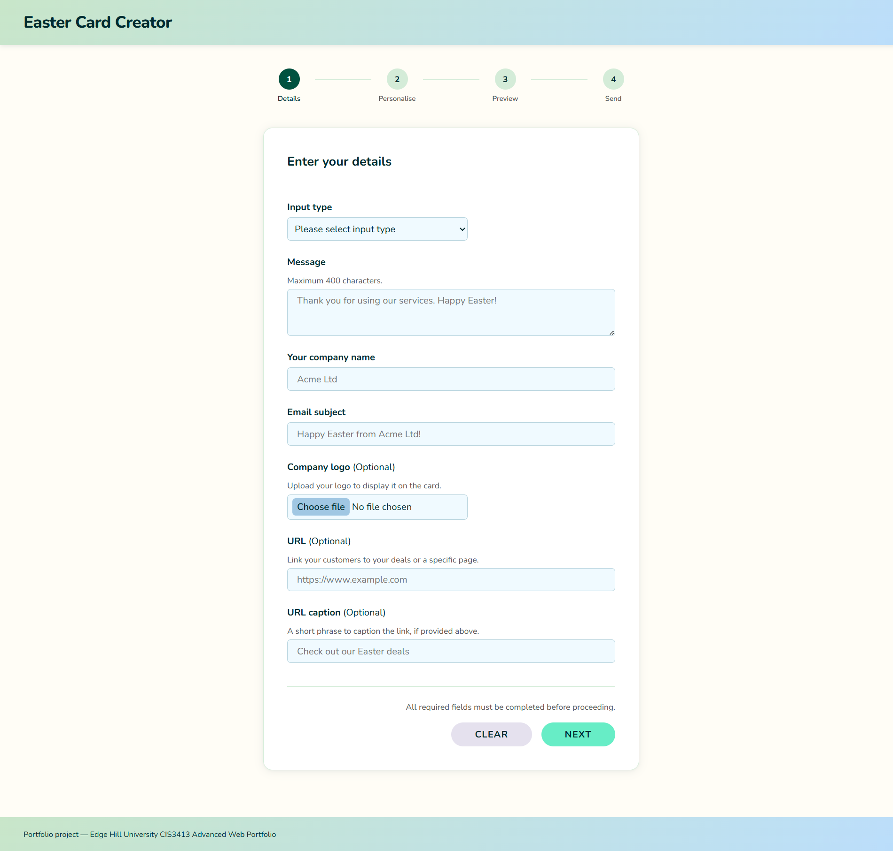

Animated Easter Card Creator
A multi-step web application for creating and sending personalised animated Easter cards in bulk, built as a single HTML file with no external dependencies.
- HTML5
- CSS3
- JavaScript
- CSS Animations
- CSV / JSON
Overview
The Easter Card Creator is a browser-based tool that lets users build, personalise and send animated Easter cards to multiple recipients in a single workflow. The application guides users through three stages: choose a card design, upload a recipient list, then preview and dispatch personalised emails. All processing is client-side; no data leaves the browser and no server is required.
Like following a crochet pattern, the application enforces a fixed sequence of steps. Each stage validates before unlocking the next, and skipping one would unravel the whole thing.
The Problem
Sending personalised seasonal cards at scale is time-consuming. Most tools require a paid subscription, a design account or a specific platform. The brief called for a self-contained, browser-only solution that any user could run locally without accounts, installs or a network connection.
The secondary constraint was technical: the entire application had to be delivered as a single HTML file. No separate stylesheets, no external scripts, no build process. This ruled out component libraries and forced every architectural decision to be deliberate.
Design
Before writing any code, I sketched the user journey as a three-step linear wizard. The key design decision was enforcing a strict sequence: you cannot preview a card without having selected a design, and you cannot send without having uploaded a valid recipient list. This prevents invalid application state rather than handling it after the fact. A reset button returns to step one at any point.
The animation concept was planned on paper before any CSS was written. The brief called for a hatching egg sequence, so I mapped out the keyframe beats: a crack appears in the shell (0–30% of the timeline), the shell splits apart (30–55%), a chick emerges (55–75%), and the chick loops a small bounce to show it is alive (75–100%). Having this progression written down meant the CSS keyframes mapped directly to intentional beats rather than being adjusted by trial and error once rendering had started.
Visual design used a spring palette — yellows, soft greens — to match the Easter context. Typography used the system sans-serif stack to avoid external font loads, which would break the single-file constraint. The step progress indicator was built using a CSS counter on an ordered list, so completed and upcoming steps are visually distinct without JavaScript class toggling.
File format support was a design decision. The brief required CSV as a minimum. JSON was added as a second format because it costs almost nothing — the same FileReader call, a different parse path — and covers users who export data from a database or API rather than a spreadsheet.
The Solution
The application renders all three wizard stages as sections within a single page. JavaScript shows the active stage and hides the others. Moving forward requires passing validation for the current step; moving back is always permitted without re-validating.
File upload uses the FileReader API to read CSV or JSON files entirely client-side. The parser handles two common issues from spreadsheet exports: UTF-8 BOM characters at the start of the file are stripped before parsing begins, and empty rows are filtered out so they do not generate blank recipient entries.
All user-supplied data is sanitised before use. Recipient names are processed with String.trim() to remove leading and trailing whitespace, then passed through encodeURIComponent() before being injected into mailto URLs. Without encoding, a name containing an ampersand, equals sign or hash character would produce a malformed mailto link that the email client would either reject or misparse. The email addresses themselves are validated against a basic regex before the send step is unlocked.
Each recipient generates one personalised mailto link composed as mailto:address?subject=...&body=..., where the message body includes the recipient's name from the uploaded file. Dispatch is sequential: the send button iterates through the recipient list and opens each link in turn, triggering the user's default email client. A known limitation is that most browsers and email clients cap the number of sequential mailto opens before requiring explicit user confirmation; this approach is practical up to roughly 20 recipients before the browser starts blocking the additional tabs.

Development Process
The animation layer was built first as a standalone proof of concept, isolated from any wizard logic. This approach mirrors how a new stitch technique gets worked in a test swatch before it goes into the main pattern. Once the keyframe sequence was stable and the timing felt right, the multi-step form logic was layered on top without disturbing the animation CSS.
Wizard step transitions required explicit focus management. When the user advances to a new step, JavaScript sets tabindex="-1" on the incoming step's heading and calls .focus() on it. This moves keyboard and screen reader focus to the start of the new content so the user does not have to Tab through the entire document to reach it. Without this, a screen reader would announce nothing had changed when the step transition occurred.
ARIA error handling was applied to the file upload input. If the uploaded file has no recognisable name column, is structurally invalid or is entirely empty, aria-invalid="true" is set on the file input and a descriptive error message — linked to the input via aria-describedby — becomes visible. The error text names the specific problem: missing column header, empty file or unrecognised format. Vague error messages such as "invalid file" were rejected during development because they give the user no actionable path to fix the problem.
The single-file constraint was managed by dividing the <script> block into clearly labelled sections: animation control, wizard step management, file parsing and mailto dispatch. Each section is self-contained with its own variables and functions. The structure that works across multiple files still works inside a single file; it just requires more discipline around naming and scope.

Outcome and Reflection
The finished application handles the complete workflow in a single HTML file with no external dependencies. It supports both CSV and JSON recipient formats, validates and sanitises all data before use, and dispatches personalised mailto links for each recipient in sequence.
The main technical learning was around the limits of CSS animation sequencing. CSS @keyframes animations run on the browser's compositor thread and cannot be paused, stepped back or made conditional on user interaction mid-sequence without removing and re-adding the animated element to the DOM. When a user selects a different card design after previewing one, the animation resets by cloning and replacing the container element. A JavaScript timer approach using setTimeout and clearTimeout would allow finer control: pausing at a specific frame on user interaction, delaying the loop until the user is ready, or synchronising the animation start to a button click with sub-frame precision. That would be the first refactor.
The mailto dispatch mechanism works within its constraints but has a real ceiling. If rebuilt for production use, I would replace it with a proper email API such as EmailJS, removing the volume limit and allowing the card animation to be embedded or attached rather than requiring the recipient to open a browser version.